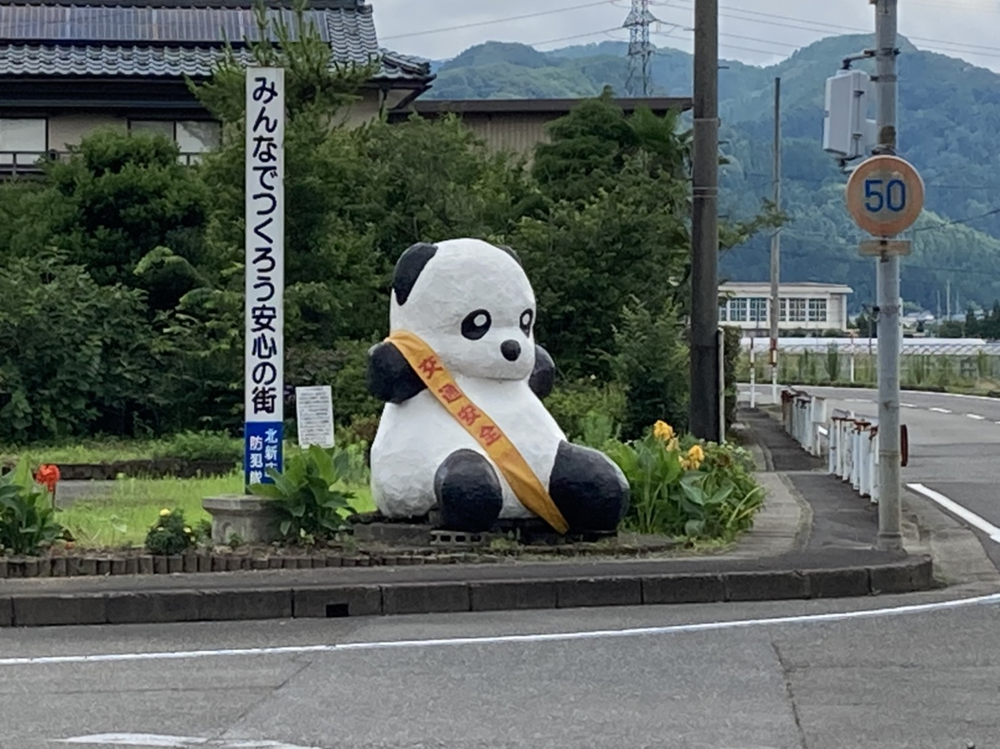
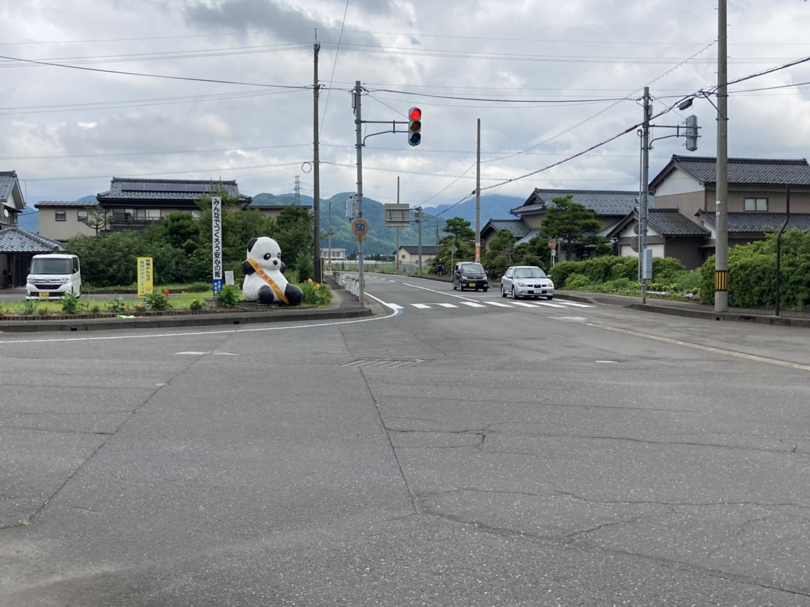

ん ： パンダが見守る 交差点 交通安全 気を付けて
一言でいうと？
北新庄の交差点にある交通安全のパンダ像

旧武生市から今立町へ向かう途中に「パンダ交差点」と呼ばれる一角があります。
「交通安全」のたすきをかけたパンダの人形があり、北新庄のシンボルとなっています。
どのくらい大きいの？
2メートル

パンダの大きさは約２メートル！
交差点で目立つため、道案内の目印にする人も多いんだとか。
昭和60年、地区の防犯隊20人ほどによって作られました。
どうやって作ったの？
竹と布団と新聞紙とせっこう！
パンダのつくり方
1.割った竹で編んでパンダの土台を作ります
2.土台に布団を巻きます
3.その上に新聞紙を張ります
4.せっこうを塗り固めます
5.乾くのを待ち、色を塗ります
6.完成！
北日野パンダの謎
パンダの顔が変わる⁉
久しぶりに見ると、あれ？パンダの顔がちょっと違う？？？
実は数年に一度、防犯隊がパンダの塗りなおし作業を行っているので、パンダの表情も少しずつ変わっているのだとか！
とっても目立つパンダ像なので、周辺地域に住む方はよく知っているのではないでしょうか？道案内に使われるのも納得です。コロナ時期は、パンダ像もマスクをしているというのを知っていましたか？